GD06が大会で使えるようになった11/7、ニュータイプチャレンジ 2026 MISSION5（11月開催）で入賞した、GD06の〔ギャラルホルン〕のカードを中心にした2本のデッキです。ファーストカード666で1位の赤/白はGD06のカードを11種33枚、トレカプラザ55上前津店で4位の赤/紫は9種30枚入れています。2本ともに入っているGD06のカードは7種で、ガンダム・バエルとガンダム・ヴィダールはどちらも4枚です。
デッキリスト
1本目：赤/白（11/7 ファーストカード666 1位）
大会ページ: ファーストカード666 11/7。
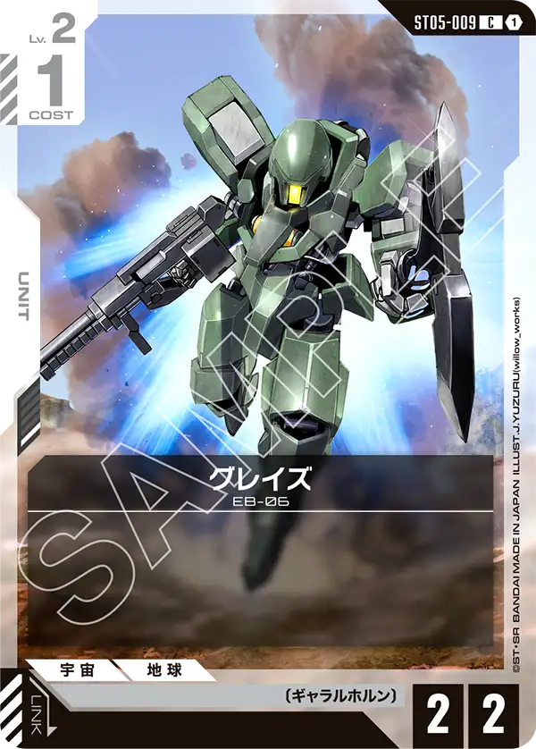
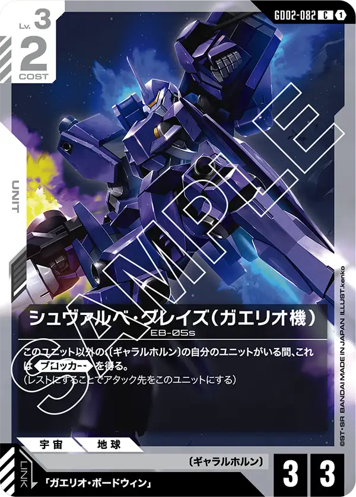
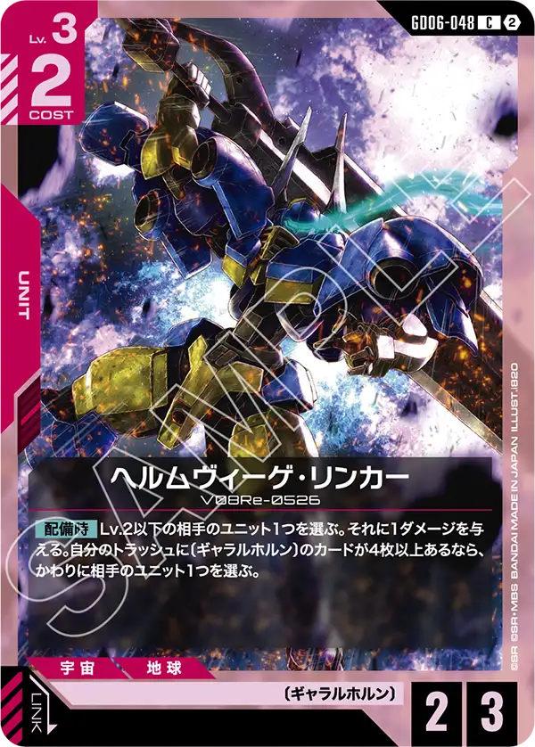

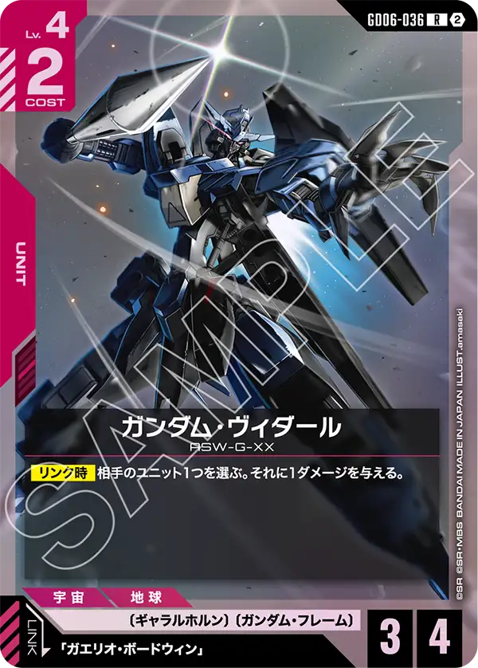

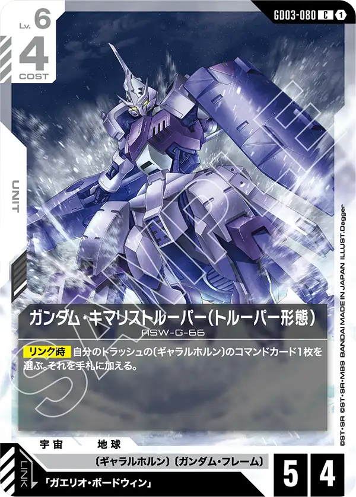
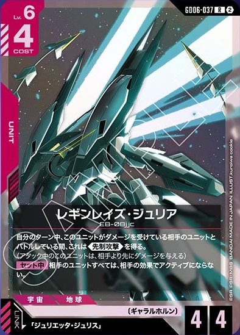
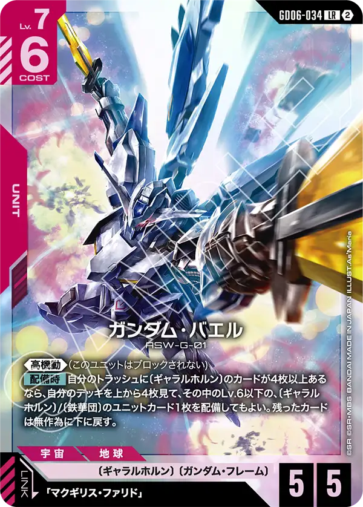
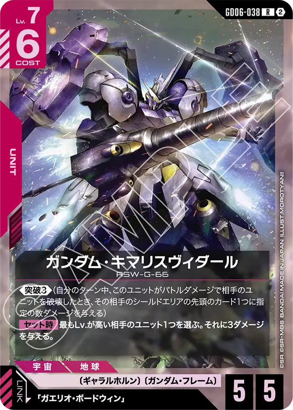

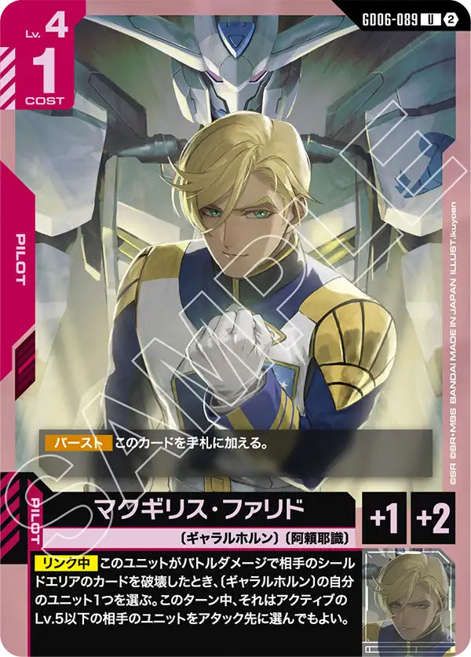
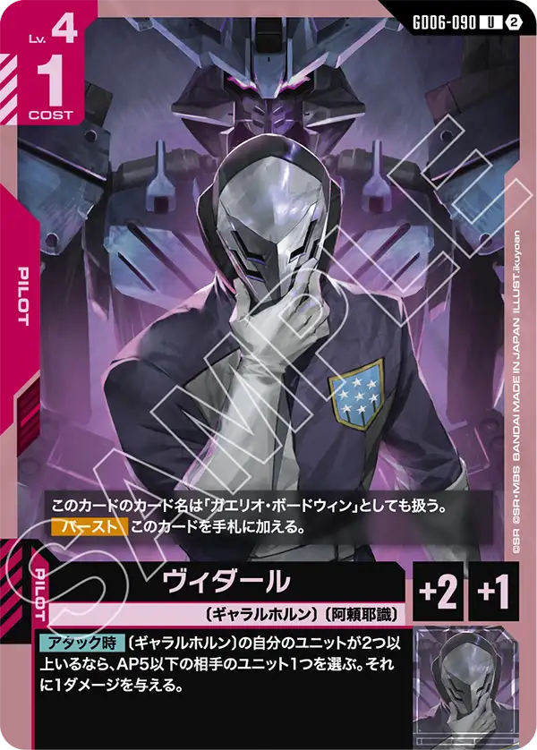


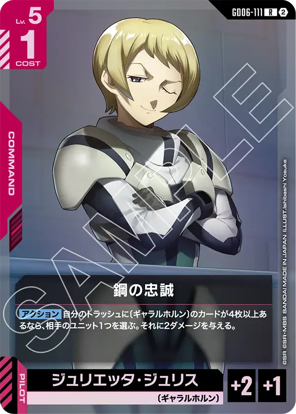
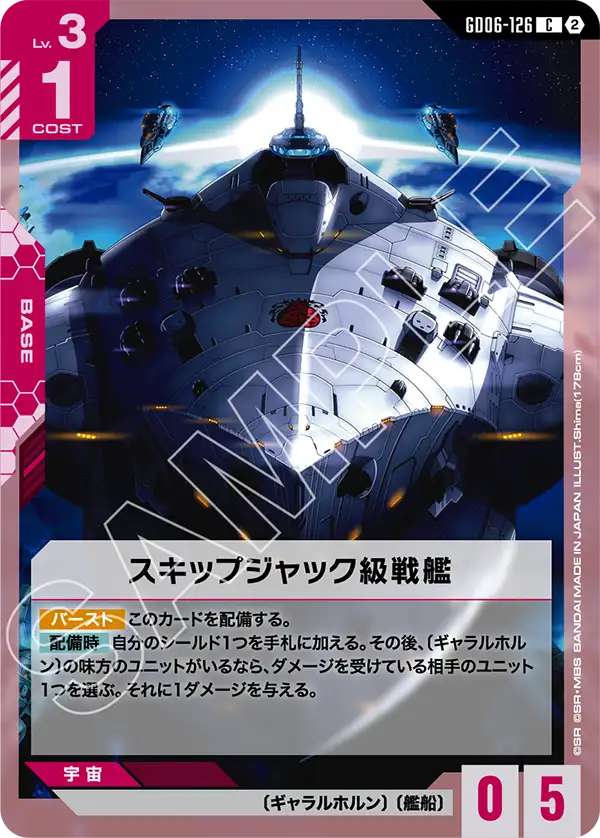
| カード | 種類 | 色 | Lv | コスト | AP/HP | 枚数 | 赤/白での採用率 |
|---|---|---|---|---|---|---|---|
| ST05-009 グレイズ 珍 | ユニット | 白 | 2 | 1 | 2/2 | 2 | 2.1% (3) |
| GD02-082 シュヴァルベ・グレイズ（ガエリオ機） 珍 | ユニット | 白 | 3 | 2 | 3/3 | 4 | 2.1% (3) |
| GD06-048 ヘルムヴィーゲ・リンカー 珍 | ユニット | 赤 | 3 | 2 | 2/3 | 4 | 2.1% (3) |
| GD06-064 アルトロンガンダム（EW版） | ユニット | 白 | 3 | 3 | 3/4 | 2 | 54.2% (78) |
| GD06-036 ガンダム・ヴィダール 珍 | ユニット | 赤 | 4 | 2 | 3/4 | 4 | 2.1% (3) |
| GD04-068 シルヴァ・バレト | ユニット | 白 | 5 | 3 | 4/4 | 3 | 91.7% (132) |
| GD03-080 ガンダム・キマリストルーパー（トルーパー形態） 珍 | ユニット | 白 | 6 | 4 | 5/4 | 2 | 1.4% (2) |
| GD06-037 レギンレイズ・ジュリア 珍 | ユニット | 赤 | 6 | 4 | 4/4 | 3 | 1.4% (2) |
| GD06-034 ガンダム・バエル 珍 | ユニット | 赤 | 7 | 6 | 5/5 | 4 | 2.1% (3) |
| GD06-038 ガンダム・キマリスヴィダール 珍 | ユニット | 赤 | 7 | 6 | 5/5 | 1 | 1.4% (2) |
| GD06-033 ΖΖガンダム | ユニット | 赤 | 9 | 8 | 7/7 | 3 | 61.8% (89) |
| GD06-089 マクギリス・ファリド 珍 | パイロット | 赤 | 4 | 1 | — | 1 | 0.7% (1) |
| GD06-090 ヴィダール 珍 | パイロット | 赤 | 4 | 1 | — | 4 | 2.1% (3) |
| GD05-111 機体奪取 | コマンド | 赤 | 1 | 1 | — | 2 | 75.7% (109) |
| GD01-118 溢れる慈愛 | コマンド | 白 | 2 | 1 | — | 4 | 100.0% (144) |
| GD06-111 鋼の忠誠 珍 | コマンド | 赤 | 5 | 1 | — | 3 | 2.1% (3) |
| GD06-126 スキップジャック級戦艦 珍 | ベース | 赤 | 3 | 1 | —/5 | 4 | 1.4% (2) |
ユニット32枚・パイロット5枚・コマンド9枚・ベース4枚。このうちGD06のカードは11種33枚です。
2本目：赤/紫（11/7 トレカプラザ55上前津店 4位）
大会ページ: トレカプラザ55上前津店 11/7。


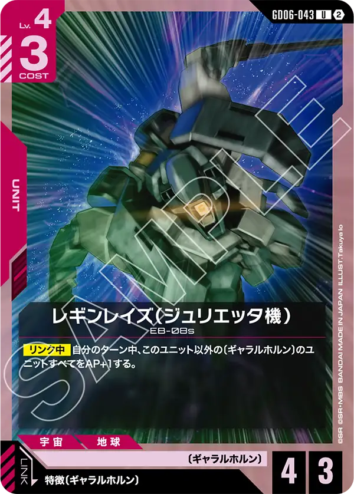
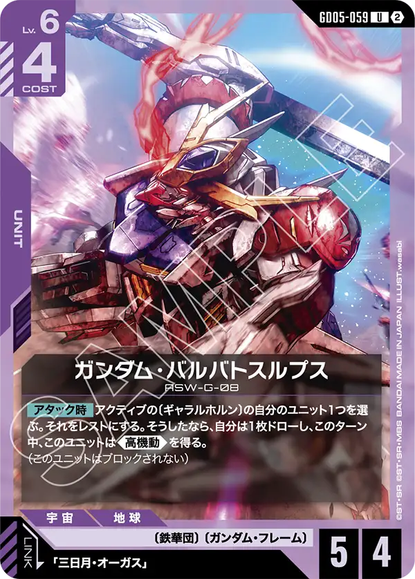

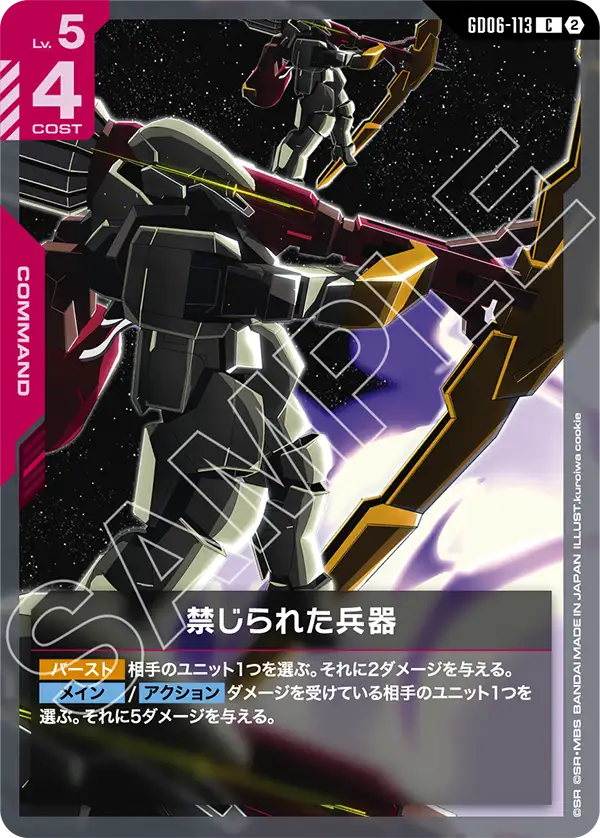
| カード | 種類 | 色 | Lv | コスト | AP/HP | 枚数 | 赤/紫での採用率 |
|---|---|---|---|---|---|---|---|
| GD02-054 ガンダム・バルバトス（第1形態） | ユニット | 紫 | 3 | 2 | 3/2 | 4 | 41.7% (5) |
| GD06-048 ヘルムヴィーゲ・リンカー | ユニット | 赤 | 3 | 2 | 2/3 | 4 | 16.7% (2) |
| GD03-056 ガンダム・バルバトスアダプト | ユニット | 紫 | 4 | 2 | 2/4 | 4 | 58.3% (7) |
| GD06-036 ガンダム・ヴィダール | ユニット | 赤 | 4 | 2 | 3/4 | 4 | 16.7% (2) |
| GD06-043 レギンレイズ（ジュリエッタ機） 珍 | ユニット | 赤 | 4 | 3 | 4/3 | 3 | 8.3% (1) |
| GD05-059 ガンダム・バルバトスルプス | ユニット | 紫 | 6 | 4 | 5/4 | 4 | 16.7% (2) |
| GD06-037 レギンレイズ・ジュリア | ユニット | 赤 | 6 | 4 | 4/4 | 3 | 16.7% (2) |
| GD06-034 ガンダム・バエル | ユニット | 赤 | 7 | 6 | 5/5 | 4 | 16.7% (2) |
| GD06-090 ヴィダール | パイロット | 赤 | 4 | 1 | — | 4 | 16.7% (2) |
| ST05-010 三日月・オーガス | パイロット | 紫 | 4 | 1 | — | 4 | 58.3% (7) |
| GD05-111 機体奪取 | コマンド | 赤 | 1 | 1 | — | 4 | 66.7% (8) |
| GD06-111 鋼の忠誠 | コマンド | 赤 | 5 | 1 | — | 3 | 16.7% (2) |
| GD06-113 禁じられた兵器 珍 | コマンド | 赤 | 5 | 4 | — | 1 | 8.3% (1) |
| GD06-126 スキップジャック級戦艦 | ベース | 赤 | 3 | 1 | —/5 | 4 | 16.7% (2) |
ユニット30枚・パイロット8枚・コマンド8枚・ベース4枚。このうちGD06のカードは9種30枚です。
構成の見どころ
2本ともに入っているGD06のカードは7種で、ガンダム・バエル[GD06-034]・ガンダム・ヴィダール[GD06-036]・レギンレイズ・ジュリア[GD06-037]・ヘルムヴィーゲ・リンカー[GD06-048]・ヴィダール[GD06-090]・鋼の忠誠[GD06-111]・スキップジャック級戦艦[GD06-126]。枚数は赤/白が26枚、赤/紫が26枚。
ガンダム・バエル[GD06-034]と鋼の忠誠[GD06-111]は、自分のトラッシュに〔ギャラルホルン〕のカードが4枚以上ないと効果が使えないため、序盤からどのようにトラッシュに〔ギャラルホルン〕を送る事ができるのかを考えながらプレイすることは非常に重要である。
トラッシュに特定のカードを3枚揃えることは一部のデッキで行っていたが4枚となるとかなり考えながらプレイをする事が要求されるだろう。
今回は赤白と赤紫の2種類のギャラルホルンデッキの紹介となるが、基本的な流れとしてガンダム・バエル[GD06-034]を利用して盤面の数を増やして自身の高機動を活かして相手を詰めると言う形のゲームプレイになる。
その道中が白と紫で異なるが、その2つそれぞれ良い点があるのでそこも含めて紹介したい。
赤白は白の特徴であるブロッカーを活かした中盤から後半に寄せるような形のデッキになっている。
白といえばこのカードと言われるシルヴァ・バレト[GD04-068]や溢れる慈愛[GD01-118]、そして今弾から新しい必須パーツと言われる可能性を秘めているアルトロンガンダム（EW版）[GD06-064]が主に採用されている。
先ほど記載したトラッシュに〔ギャラルホルン〕を送る必要があるので、序盤から〔ギャラルホルン〕のユニットを出していきたい。
そのため唯一〔ギャラルホルン〕でレベル2のグレイズ[ST05-009]も白がデッキに入るため採用されている。
赤白と言うことでMFデッキで基本セットとして採用されている機体奪取[GD05-111]と溢れる慈愛[GD01-118]を使い手札入れ替え+トラッシュの補充を行う事ができるため、トラッシュの問題も他の色に比べるとまだ容易なのかもしれない。
中盤ではトラッシュを参照してダメージを与えるヘルムヴィーゲ・リンカー[GD06-048]やリンク時に1点ダメージを与えるガンダム・ヴィダール[GD06-036]、スキップジャック級戦艦[GD06-126]で削っていく形となるが、少し薄い印象がある。
レベル6以上が5種類入っているため、中盤は最低限で耐えて後半に持ち越すと言う形であるが、序中盤の組み立て方には気をつけないと後半強くなったタイミングで取り返しがつかない状態になっている可能性もある。
先ほど記載したが、後半は非常に強力なデッキである。
ガンダム・バエル[GD06-034]を中心にガンダム・キマリスヴィダール[GD06-038]、ΖΖガンダム[GD06-033]を使い、盤面の除去やシールド破壊を行う。ガンダム・バエル[GD06-034]から登場させたいであろうレギンレイズ・ジュリア[GD06-037]も非常に強力でダメージが入っているユニット相手に戦闘を行う場合、先制攻撃を得るため前述したヘルムヴィーゲ・リンカー[GD06-048]やガンダム・ヴィダール[GD06-036]などで細かくダメージを与えてこのカードで一方的に破壊することができる。
赤紫も後半の動きは赤白と同じような形になると思うが、序中盤に関しては紫と言えばと言われるガンダム・バルバトス（第1形態）[GD02-054]、ガンダム・バルバトスアダプト[GD03-056]、三日月・オーガス[ST05-010]を中心に戦う形になるだろう。
今回紹介するデッキには珍しくガンダム・バルバトスルプス[GD05-059]が採用されているが、これはこのデッキだからこそ採用されているカードとなる。
アタック時に〔ギャラルホルン〕をレストにすることでドローと高機動を得るこのカードは単体で出すだけでは無く、ガンダム・バエル[GD06-034]の配備時効果でも実は出すことができるため1枚使うだけでは2体も高機動が出てくるのは相手も想定出来ないような動きをすることができる。
紫の特徴として効果ダメージを散らす戦い方が得意な色であるが、このデッキとも非常に相性が良くレギンレイズ・ジュリア[GD06-037]の先制攻撃を得ることもでき、スキップジャック級戦艦[GD06-126]の効果も有効的に利用ができるようになっている。
運営のひとこと
以前の記事で赤紫のギャラルホルンデッキは登場するだろうと書いたが、赤白も入賞するとは思っていなかった。
後半のポテンシャルをどう活かせるのか未知な部分ではあったが、赤白特有のコマンドカードによるトラッシュ補充がスムーズに効果利用までできる形になっているのだろう。
最初は非常に能力が活かしきれないギャラルホルンのカードたちではあったが、赤色での追加があり一気にデッキとして楽しめるようになっただろう。
様々なカードを入れ替えても面白いデッキになっているので是非気になるプレイヤーは一度組んでみてほしい。
数え方
採用率は、GD06が大会で使えるようになった11/7から11/9までのニュータイプチャレンジ 2026 MISSION5（11月開催）の入賞デッキのうち、それぞれのデッキと同じデッキカラーのデッキを母数にしています（赤/白 144本・赤/紫 12本）。GD06の発売から日が浅く、とくに赤/紫は母数が少ないため、1本の違いで採用率が大きく動きます。「珍」はそのデッキカラーでの採用率が10%未満のカードです。デッキリストが公開されていない入賞デッキは数に入れていません。数字は公式の大会結果から自動で集めた集計です。誤りに気づいたらXアカウント（@gcg_stats）のDMで教えてください。